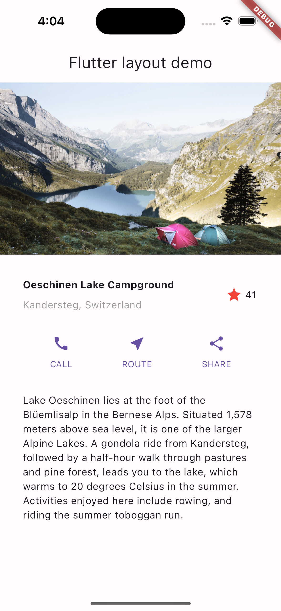
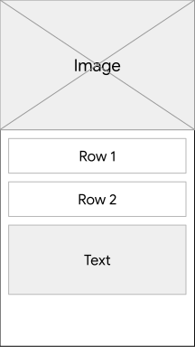
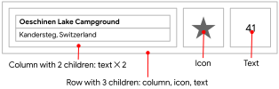
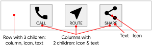
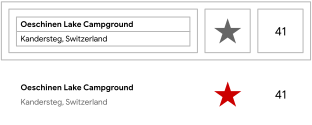
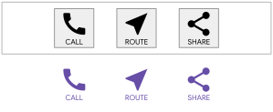
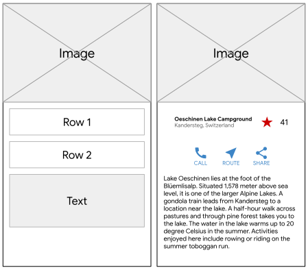

Bu eğitimde Flutter’da düzenlerin nasıl tasarlanıp oluşturulacağı açıklanmaktadır.
Verilen örnek kodu kullanırsanız, aşağıdaki uygulamayı oluşturabilirsiniz.

Tamamlanmış uygulama. Fotoğraf: Dino Reichmuth / Unsplash . Metin: İsviçre Turizm .
Yerleşim mekanizmasına daha iyi bir genel bakış elde etmek için, Flutter’ın yerleşim yaklaşımıyla başlayın.
Bu bölümde, uygulamanızın kullanıcıları için ne tür bir kullanıcı deneyimi istediğinizi düşünün.
Kullanıcı arayüzünüzün bileşenlerini nasıl konumlandıracağınızı düşünün. Bir düzen, bu konumlandırmaların toplam nihai sonucundan oluşur. Kodlama hızınızı artırmak için düzeninizi planlamayı düşünün. Ekranda bir şeyin nereye yerleştirileceğini bilmek için görsel ipuçları kullanmak büyük bir yardımcı olabilir.
İster arayüz tasarım aracı, ister kalem ve kağıt olsun, hangisini tercih ederseniz edin. Kod yazmadan önce ekranınızda öğeleri nereye yerleştirmek istediğinizi belirleyin. Bu, programlamanın “İki kere ölç, bir kere kes” atasözüne benzer.
Düzeni temel unsurlarına ayırmak için şu soruları sorun:
Daha büyük öğeleri belirleyin. Bu örnekte, resmi, başlığı, düğmeleri ve açıklamayı bir sütun halinde düzenliyorsunuz.
Sayfa düzenindeki temel unsurlar: resim, satır, satır ve metin bloğu.

1. satır, Başlık bölümü, üç alt öğeye sahiptir: bir metin sütunu, bir yıldız simgesi ve bir sayı. İlk alt öğesi olan sütun, iki satır metin içerir. Bu ilk sütun daha fazla alana ihtiyaç duyabilir.

Metin blokları ve bir simge içeren başlık bölümü.
2. satırdaki Düğme bölümü üç alt öğeye sahiptir: her alt öğe, bir simge ve metin içeren bir sütun içerir.

Üç adet etiketli düğmenin bulunduğu Düğme bölümü
Yerleşim planını çizdikten sonra, nasıl kodlayacağınızı düşünün.
Kodun tamamını tek bir sınıfta mı yazardınız? Yoksa düzenin her bir parçası için ayrı bir sınıf mı oluştururdunuz?
Flutter’ın en iyi uygulamalarını takip etmek için, düzeninizin her
bir bölümünü içerecek bir sınıf veya Widget oluşturun. Flutter, bir
kullanıcı arayüzünün bir bölümünü yeniden oluşturması gerektiğinde,
değişen en küçük bölümü günceller. Bu nedenle Flutter, “her şeyi bir
widget” yapar. Bir widget’ta yalnızca metin değişirse Text,
Flutter yalnızca o metni yeniden çizer. Flutter, kullanıcı girdisine
yanıt olarak kullanıcı arayüzünün mümkün olan en az miktarda
değişikliğini yapar.
Bu eğitimde, belirlediğiniz her bir öğeyi ayrı bir widget olarak yazın.
Bu bölümde, uygulamanızı başlatmak için temel Flutter uygulama kodunu yazacağız.
lib/main.dart aşağıdaki kodla değiştirin. Bu
uygulama, uygulama başlığı ve uygulamanın ana sayfasında gösterilen
başlık için bir parametre kullanır appBar. Bu karar kodu
basitleştirir.import 'package:flutter/material.dart';
void main() => runApp(const MyApp());
class MyApp extends StatelessWidget {
const MyApp({super.key});
@override
Widget build(BuildContext context) {
const String appTitle = 'Flutter layout demo';
return MaterialApp(
title: appTitle,
home: Scaffold(
appBar: AppBar(title: const Text(appTitle)),
body: const Center(
child: Text('Hello World'),
),
),
);
}
}Bu bölümde, TitleSection aşağıdaki düzene benzeyen bir
widget oluşturun.

Başlık bölümünün taslak ve prototip kullanıcı arayüzü
Sınıfın sonuna aşağıdaki kodu ekleyin MyApp.
class TitleSection extends StatelessWidget {
const TitleSection({super.key, required this.name, required this.location});
final String name;
final String location;
@override
Widget build(BuildContext context) {
return Padding(
padding: const EdgeInsets.all(32),
child: Row(
children: [
Expanded(
/*1*/
child: Column(
crossAxisAlignment: CrossAxisAlignment.start,
children: [
/*2*/
Padding(
padding: const EdgeInsets.only(bottom: 8),
child: Text(
name,
style: const TextStyle(fontWeight: FontWeight.bold),
),
),
Text(location, style: TextStyle(color: Colors.grey[500])),
],
),
),
/*3*/
Icon(Icons.star, color: Colors.red[500]),
const Text('41'),
],
),
);
}
}Expanded
widget’ı genişletmek üzere widget’ı kullanın Column. Sütunu
satırın başına yerleştirmek için crossAxisAlignment
özelliği olarak ayarlayın CrossAxisAlignment.start.Padding widget’ın içine yerleştirin.41. Tüm satır bir Padding widget’ın içine
yerleşiyor ve her kenarı 32 piksel boşlukla çevreleniyor.Özellik içinde, body widget’ı başka bir widget ile
değiştirin. Widget’ın içinde, Center widget’ı başka bir
widget ile değiştirin SingleChildScrollView.
SingleChildScrollView, Text,
Column.
body: const Center(
child: Text('Hello World'),Yerine:
body: const SingleChildScrollView(
child: Column(
children: [Bu kod güncellemeleri uygulamada aşağıdaki değişiklikleri yapar:
SingleChildScrollView widget kaydırılabilir. Bu,
mevcut ekrana sığmayan öğelerin görüntülenmesini sağlar.Column, özelliğindeki tüm öğeleri listelenen
sırayla görüntüler children. Listedeki ilk öğe listenin en
üstünde görüntülenir. Listedeki öğeler children ekranda
yukarıdan aşağıya doğru dizi halinde görüntülenir.TitleSection Widget’ı listenin ilk öğesi olarak ekleyin
children. Bu, widget’ı ekranın en üstüne yerleştirir.
Sağlanan adı ve konumu yapıcıya iletin TitleSection.
children: [
TitleSection(
name: 'Oeschinen Lake Campground',
location: 'Kandersteg, Switzerland',
),
],İpucu: Uygulamanıza kod yapıştırırken girintiler bozulabilir. Bunu Flutter editörünüzde düzeltmek için otomatik yeniden biçimlendirme desteğini kullanın. Geliştirme sürecinizi hızlandırmak için Flutter’ın hızlı yeniden yükleme özelliğini deneyin. Sorun yaşıyorsanız, kodunuzu
lib/main.dartile karşılaştırın.
Bu bölümde, uygulamanıza işlevsellik katacak düğmeleri ekleyin.
Düğme bölümü, aynı düzeni kullanan üç sütun içerir: bir metin satırının üzerinde bir simge.

Düğme bölümü, taslak ve prototip kullanıcı arayüzü olarak.
Bu sütunları tek bir satırda, her biri aynı alanı kaplayacak şekilde dağıtmayı planlayın. Tüm metinleri ve simgeleri ana renkle boyayın.
TitleSection Düğme satırını oluşturacak kodu içerecek
şekilde widget’ın sonuna aşağıdaki kodu ekleyin.
class ButtonSection extends StatelessWidget {
const ButtonSection({super.key});
@override
Widget build(BuildContext context) {
final Color color = Theme.of(context).primaryColor;
// ···
}
}Her sütun için kod aynı sözdizimini kullanabileceğinden, adlı bir
widget oluşturun ButtonWithText. Widget’ın yapıcı
fonksiyonu, düğme için bir renk, simge verileri ve bir etiket kabul
eder. Bu değerleri kullanarak, widget, alt öğeleri olarak bir
Icon ve stilize edilmiş bir widget Text içeren
bir oluşturur Column. Bu alt öğeleri ayırmaya yardımcı
olmak için, widget’ı bir widget’ı ile sarmalayan bir
Padding widget oluşturulur.
Sınıfın sonuna aşağıdaki kodu ekleyin ButtonSection.
class ButtonSection extends StatelessWidget {
const ButtonSection({super.key});
// ···
}
class ButtonWithText extends StatelessWidget {
const ButtonWithText({
super.key,
required this.color,
required this.icon,
required this.label,
});
final Color color;
final IconData icon;
final String label;
@override
Widget build(BuildContext context) {
return Column(
mainAxisSize: MainAxisSize.min,
mainAxisAlignment: MainAxisAlignment.center,
children: [
Icon(icon, color: color),
Padding(
padding: const EdgeInsets.only(top: 8),
child: Text(
label,
style: TextStyle(
fontSize: 12,
fontWeight: FontWeight.w400,
color: color,
),
),
),
],
);
}
}Aşağıdaki kodu widget’a ekleyin ButtonSection.
Butonların her biri için bir tane olmak üzere, widget’tan üç örnek
ekleyin ButtonWithText. Belirtilen düğme için
Icon rengi, simgeyi ve metni geçirin.
Sütunları ana eksen boyunca değerle hizalayın
MainAxisAlignment.spaceEvenly. Bir widget’ın ana ekseni
Row yatay, diğer bir Column widget’ın ana
ekseni ise dikeydir. Bu değer, Flutter’a her sütunun öncesinde, arasında
ve sonrasında eşit miktarda boş alan bırakmasını söyler
Row.
class ButtonSection extends StatelessWidget {
const ButtonSection({super.key});
@override
Widget build(BuildContext context) {
final Color color = Theme.of(context).primaryColor;
return SizedBox(
child: Row(
mainAxisAlignment: MainAxisAlignment.spaceEvenly,
children: [
ButtonWithText(color: color, icon: Icons.call, label: 'CALL'),
ButtonWithText(color: color, icon: Icons.near_me, label: 'ROUTE'),
ButtonWithText(color: color, icon: Icons.share, label: 'SHARE'),
],
),
);
}
}
class ButtonWithText extends StatelessWidget {
const ButtonWithText({
super.key,
required this.color,
required this.icon,
required this.label,
});
final Color color;
final IconData icon;
final String label;
@override
Widget build(BuildContext context) {
return Column(
// ···
);
}
}Listeye düğme bölümünü ekleyin children.
TitleSection(
name: 'Oeschinen Lake Campground',
location: 'Kandersteg, Switzerland',
),
ButtonSection(),
],Bu bölüme, bu uygulamaya ait metin açıklamasını ekleyin.

Metin bloğu, taslak ve prototip kullanıcı arayüzü olarak.
Aşağıdaki kodu, mevcut ButtonSection widget’ın ardından
ayrı bir widget olarak ekleyin.
class TextSection extends StatelessWidget {
const TextSection({super.key, required this.description});
final String description;
@override
Widget build(BuildContext context) {
return Padding(
padding: const EdgeInsets.all(32),
child: Text(description, softWrap: true),
);
}
}softWrap Bu ayarı kullanarak true, metin
satırları kelime sınırında satır atlamadan önce sütun genişliğini
doldurur.
TextSection etiketinden sonra yeni bir widget ekleyin
ButtonSection. Widget eklerken TextSection,
özelliğini description konum açıklamasının metnine
ayarlayın.
location: 'Kandersteg, Switzerland',
),
ButtonSection(),
TextSection(
description:
'Lake Oeschinen lies at the foot of the Blüemlisalp in the '
'Bernese Alps. Situated 1,578 meters above sea level, it '
'is one of the larger Alpine Lakes. A gondola ride from '
'Kandersteg, followed by a half-hour walk through pastures '
'and pine forest, leads you to the lake, which warms to 20 '
'degrees Celsius in the summer. Activities enjoyed here '
'include rowing, and riding the summer toboggan run.',
),
],Bu bölümde, düzeninizi tamamlamak için resim dosyasını ekleyin.
Uygulamanızın görselleri referans almasını sağlamak için, uygulama
pubspec.yaml dosyasını değiştirin.
images bir klasör oluşturun.lake.jpg ve yeni klasöre ekleyin
images.Not: Bu ikili dosyayı kaydetmek için kullanamazsınız. Resmi Unsplash Lisansı altında Unsplash’ten indirebilirsiniz
wget. Küçük boyutu 94,4 kB’dir.
Görselleri eklemek için, uygulamanızın kök dizinindeki dosyaya bir
assets etiketi ekleyin. <image>
etiketini eklediğinizde, bu etiket kodunuzda kullanılabilir görsellere
işaretçiler kümesi görevi görür pubspec.yaml.
pubspec.yaml
flutter:
uses-material-design: true
assets:
- images/lake.jpgİpucu: Metinde
pubspec.yamlboşluk ve büyük/küçük harf kullanımına dikkat edin. Önceki örnekte verildiği gibi değişiklikleri dosyaya yazın. Bu değişiklik, görüntünün görüntülenmesi için çalışan programı yeniden başlatmanızı gerektirebilir.
ImageSection Diğer tanımlamaların ardından aşağıdaki
bileşeni tanımlayın.
class ImageSection extends StatelessWidget {
const ImageSection({super.key, required this.image});
final String image;
@override
Widget build(BuildContext context) {
return Image.asset(image, width: 600, height: 240, fit: BoxFit.cover);
}
}Bu BoxFit.cover değer, Flutter’a görüntüyü iki kısıtlama
ile görüntülemesini söyler. Birincisi, görüntüyü mümkün olduğunca küçük
göstermek. İkincisi, düzenin ayırdığı tüm alanı, yani render kutusunu
kaplamak.
ImageSection Listeye ilk alt öğe olarak bir widget
ekleyin children. Özelliği image,
“Uygulamanızı sağlanan resimleri kullanacak şekilde yapılandırın”
bölümünde eklediğiniz resmin yoluna ayarlayın.
children: [
ImageSection(
image: 'images/lake.jpg',
),
TitleSection(
name: 'Oeschinen Lake Campground',
location: 'Kandersteg, Switzerland',
),İşte bu kadar! Uygulamayı yeniden başlattığınızda, uygulamanız şöyle görünmelidir.
Tamamlanmış uygulama
Bu doküman, Flutter resmi dokümantasyonundan türetilmiş Türkçe ders notudur.
Orijinal kaynak:
https://docs.flutter.dev/ui/layout/tutorial
Türkçe çeviri ve düzenleme:
Doç. Dr. Hakan Temiz
Bu dokümandaki içerikler aşağıdaki açık lisanslar kapsamında sunulmaktadır:
Metin içerikleri (anlatım ve açıklamalar):
Flutter resmi dokümantasyonundan alınmış veya uyarlanmıştır.
Lisans: Creative Commons Attribution 4.0 International
(CC BY 4.0)
https://creativecommons.org/licenses/by/4.0/
Bu lisans kapsamında: - İçerik kopyalanabilir, dağıtılabilir ve
uyarlanabilir
- Ticari kullanım serbesttir
- Kaynak belirtilmesi zorunludur
Kod örnekleri:
Flutter resmi dokümantasyonundan alınmış veya uyarlanmıştır.
Lisans: BSD 3-Clause License
https://opensource.org/licenses/BSD-3-Clause
Bu lisans kapsamında: - Kodlar kopyalanabilir, değiştirilebilir ve
dağıtılabilir
- Ticari kullanım serbesttir
- Lisans bildiriminin korunması gerekir